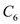

The transfer function of the third-order low pass filter is,
 .
.
The pass band edge frequency of the actual filter is,

The transfer function of the third-order low pass filter is,
.
The pass band edge frequency of the actual filter is,
(a)
The transfer function of the third-order low pass filter is,

The transfer function of the actual filter is obtained by replacing  by .
by .
Thus, the transfer function of the actual filter is,
(b)
The low pass filter using cascade connection of first order low pass filter and a second-order Low Pass Notch (LPN) filter can be realized as follows:
.
Here,
The dc gain of both the filters should be unity.
The dc gain of first order low pass filter is,
Thus, the transfer function of the low pass filter is, .
The dc gain of second order LPN filter is,
The transfer function of the second order LPN filter is,
The dc gain of transfer function is,
Thus, the requirement that the dc gain of the filter should be unity is met.
The transfer function of the low pass filter is,
.
Compare the above transfer function with . Now, the value of  is,
is,
.
For the low pass filter, the frequency  is,
is,
Choose .
Substitute  for and
for and  for
for  in the equation.
in the equation.
Thus, the design parameters of the low pass filter are,
Refer Figure 16.22(e) in the textbook for the Low pass Notch (LPN) filter circuit.
The transfer function of the low pass notch filter is,
.
The resonant frequency of the low pass notch filter from the transfer function is,
The resonant frequency of the low pass notch filter is,
Substitute  for
for  in the equation.
in the equation.
Choose and  .
.
The notch frequency is,
From transfer function,
 for capacitors
for capacitors  , for
, for  and
and  for
for  in the equation.
in the equation.
Simplify further.
Calculate the value of  .
.
From transfer function,
The quality factor is,

Substitute  for  in the equation.
in the equation.

Substitute  for capacitors , 3.68 for
for capacitors , 3.68 for  and
and  for
for  in the equation.
in the equation.
Simplify further.
Thus, the design parameters of LPN filter are,
 .
.